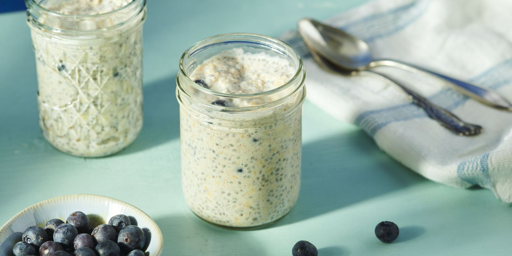

Satiating Oats Recipe

Picture credit: Allrecipes / Qi Ai
Pot of oats with yogurt.
Description
This recipe is nutritious and ideal for breakfast that will kick start your day with enough energy to crush the
day!
Ingredients
- Milk: Use cow's milk, oat milk, almond milk, or whatever milk alternative you prefer.
- Yogurt: Greek yogurt lends richness, flavor, and lots of protein to help you take on the day.
- Oats: Make sure to use rolled oats.
- Honey: Honey lends subtle sweetness.
- Chia seeds: Fiber-rich chia seeds add flavor and nutrition.
- Cinnamon: Enhance the overall flavor with ground cinnamon.
- Berries: Choose fresh, plump, vibrant berries.
Steps
Step 1:
Combine all the ingredients (besides the fruit) in a jar, seal, and shake.
Step 2:
Open the jar and fold in the fruit.
Step 3:
Seal the jar and refrigerate overnight.
Home